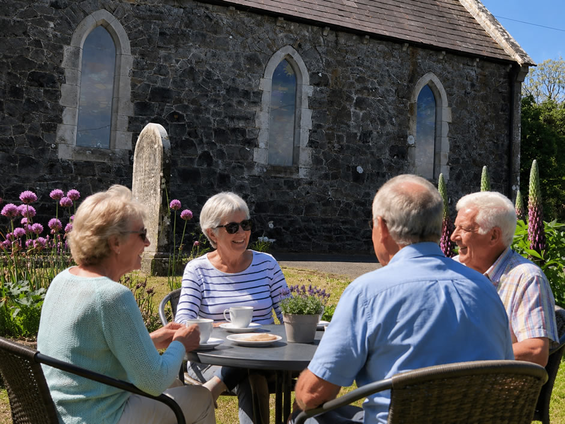

White Label Websites
Replace the New Ballagh branding with your organisation name, colours, logo, imagery and custom domain.
Powered by Copper Core, Copper Fox Digital's CMS / CRM
Launch a branded community support website with events, training, chat areas, buy and sell, dashboards and reporting in one professional system.

My Community Support Software
My Community Support gives centres and local groups a practical online home where members can create accounts, book places, attend training, keep personal records and stay connected with staff.
It is powered by Copper Core, Copper Fox Digital's CMS / CRM for managing websites, members, content and community workflows.
Platform Abilities
Replace the New Ballagh branding with your organisation name, colours, logo, imagery and custom domain.
Publish events, set available places, collect registrations and show members what is coming up.
List courses, manage attendance and let members keep a personal record of completed learning.
Create public or invite-only discussion areas for staff, volunteers, learners and local groups.
Give members a useful local marketplace with enquiry messages and simple moderation tools.
Manage users, events, training, content, testimonials and community posts from a controlled back office.
Publish centre updates, blogs, history pages and local announcements in the same design system.
Keep a clearer record of bookings, members, training activity and engagement for funders or boards.
Live Example
New Ballagh Centre uses the platform for community development, wellbeing, events and practical training in Rossinver, Co. Leitrim.
Pricing Tiers
For small groups that need a professional online home.
Setup from £1,000
For active organisations running bookings and programmes.
Setup from £1,500
For funded projects, councils and multi-group rollouts.
Setup from £10,000
What Buyers See
The site can be shaped around the services that matter most: older people support, active age programmes, adult education, outdoor wellbeing, heritage, volunteering and local social activity.
Share updates, opportunities and stories for local residents.
Make courses easy to browse, reserve and record.
Owner and Platform

My Community Support is owned and managed by Copper Fox Digital, a Wiltshire web design and development agency building professional websites and practical digital systems for UK small businesses, charities and growing teams.
Copper Core is the CMS / CRM platform behind My Community Support. It gives community organisations one managed place for website content, member records, bookings, training activity, enquiries and ongoing support.
Visit Copper Fox DigitalReady to promote the platform?